Last updated: 2026-05-06
Checks: 7 0
Knit directory: MT_LMS/
This reproducible R Markdown analysis was created with workflowr (version 1.7.2). The Checks tab describes the reproducibility checks that were applied when the results were created. The Past versions tab lists the development history.
Great! Since the R Markdown file has been committed to the Git repository, you know the exact version of the code that produced these results.
Great job! The global environment was empty. Objects defined in the global environment can affect the analysis in your R Markdown file in unknown ways. For reproduciblity it’s best to always run the code in an empty environment.
The command set.seed(20260113) was run prior to running
the code in the R Markdown file. Setting a seed ensures that any results
that rely on randomness, e.g. subsampling or permutations, are
reproducible.
Great job! Recording the operating system, R version, and package versions is critical for reproducibility.
Nice! There were no cached chunks for this analysis, so you can be confident that you successfully produced the results during this run.
Great job! Using relative paths to the files within your workflowr project makes it easier to run your code on other machines.
Great! You are using Git for version control. Tracking code development and connecting the code version to the results is critical for reproducibility.
The results in this page were generated with repository version 751fc72. See the Past versions tab to see a history of the changes made to the R Markdown and HTML files.
Note that you need to be careful to ensure that all relevant files for
the analysis have been committed to Git prior to generating the results
(you can use wflow_publish or
wflow_git_commit). workflowr only checks the R Markdown
file, but you know if there are other scripts or data files that it
depends on. Below is the status of the Git repository when the results
were generated:
Ignored files:
Ignored: .Rhistory
Ignored: .Rproj.user/
Untracked files:
Untracked: analysis/QC_integration_annotation.Rmd
Untracked: analysis/QC_integration_annotation_2ù.Rmd
Untracked: analysis/omnipathr-log/
Untracked: data/Cellbender_output/
Untracked: data/Cellranger_output/
Untracked: data/Libraries_MT_LMS_metadata.xlsx
Untracked: omnipathr-log/
Untracked: output/MT_QC_integration_annotation/
Untracked: output/QC_integration_annotation/
Untracked: output/QC_integration_annotation_2/
Untracked: output/RVS_QC_integration_annotation/
Untracked: renv.lock
Untracked: renv/
Unstaged changes:
Modified: .Rprofile
Modified: analysis/QC_integration_annotation_2.Rmd
Note that any generated files, e.g. HTML, png, CSS, etc., are not included in this status report because it is ok for generated content to have uncommitted changes.
These are the previous versions of the repository in which changes were
made to the R Markdown
(analysis/RVS_QC_integration_annotation.Rmd) and HTML
(docs/RVS_QC_integration_annotation.html) files. If you’ve
configured a remote Git repository (see ?wflow_git_remote),
click on the hyperlinks in the table below to view the files as they
were in that past version.
| File | Version | Author | Date | Message |
|---|---|---|---|---|
| Rmd | 751fc72 | GinoBonazza | 2026-05-06 | wflow_publish("analysis/RVS_QC_integration_annotation.Rmd") |
Setup
current_file <- "RVS_QC_integration_annotation"
library(here)
library(readr)
library(readxl)
library(Seurat)
library(DropletUtils)
library(Matrix)
library(scDblFinder)
library(scCustomize)
library(dplyr)
library(ggplot2)
library(magrittr)
library(tidyverse)
library(reshape2)
library(S4Vectors)
library(SingleCellExperiment)
library(pheatmap)
library(png)
library(gridExtra)
library(knitr)
library(scales)
library(RColorBrewer)
library(Matrix.utils)
library(tibble)
library(scater)
library(patchwork)
library(statmod)
library(clustree)
library(harmony)
library(speckle)
library(qs2)
output_dir_data <- here::here("output", current_file)
if (!dir.exists(output_dir_data)) dir.create(output_dir_data)
if (!dir.exists(here::here("docs", "figure"))) dir.create(here::here("docs", "figure"))
output_dir_figs <- here::here("docs", "figure", paste0(current_file, ".Rmd"))
if (!dir.exists(output_dir_figs)) dir.create(output_dir_figs)Quality control
Load and merge CellBender and Cell Ranger output for the two RVS samples only.
cell_bender_merged <- Read_CellBender_h5_Multi_File(
merge = TRUE,
data_dir = here::here("data", "Cellbender_output"),
custom_name = "_filtered.h5",
sample_list = c(
"cellbender_output_RVS_200625_d0",
"cellbender_output_RVS_200625_d14_A1"
),
sample_names = c(
"RVS_200625_d0",
"RVS_200625_d14_A1"
)
)
cell_ranger_merged <- Read10X_h5_GEO(
merge = TRUE,
data_dir = here::here("data", "Cellranger_output"),
shared_suffix = "_filtered_feature_bc_matrix.h5",
sample_list = c(
"RVS_200625_d0",
"RVS_200625_d14_A1"
),
sample_names = c(
"RVS_200625_d0",
"RVS_200625_d14_A1"
)
)
RVS_preQC <- Create_CellBender_Merged_Seurat(
raw_cell_bender_matrix = cell_bender_merged,
raw_counts_matrix = cell_ranger_merged,
raw_assay_name = "RAW",
cell_bender_assay_name = "RNA"
)
rm(cell_bender_merged, cell_ranger_merged)Add metadata: sample, time point, mitochondrial percentage, and ribosomal percentage.
cn <- Cells(RVS_preQC)
RVS_preQC$Sample <- dplyr::case_when(
grepl("^RVS_200625_d0[_-]", cn) ~ "RVS_200625_d0",
grepl("^RVS_200625_d14_A1[_-]", cn) ~ "RVS_200625_d14_A1",
TRUE ~ NA_character_
)
RVS_preQC$time_point <- dplyr::case_when(
RVS_preQC$Sample == "RVS_200625_d0" ~ "d0",
RVS_preQC$Sample == "RVS_200625_d14_A1" ~ "d14",
TRUE ~ NA_character_
)
RVS_preQC$condition <- RVS_preQC$time_point
RVS_preQC[["percent.mt"]] <- PercentageFeatureSet(RVS_preQC, pattern = "^MT-")
RVS_preQC[["percent.rp"]] <- PercentageFeatureSet(RVS_preQC, pattern = "^RP[SL]")
table(RVS_preQC$Sample, useNA = "ifany")
RVS_200625_d0 RVS_200625_d14_A1
1693 1195 Check how much CellBender affected the dataset.
table(RVS_preQC$Sample)
RVS_200625_d0 RVS_200625_d14_A1
1693 1195 RVS_preQC <- Add_CellBender_Diff(
seurat_object = RVS_preQC,
raw_assay_name = "RAW",
cell_bender_assay_name = "RNA"
)
median_stats <- Median_Stats(
seurat_object = RVS_preQC,
group_by_var = "Sample",
median_var = c("nCount_Diff", "nFeature_Diff")
)
median_stats# A tibble: 3 × 5
Sample Median_nCount_RNA Median_nFeature_RNA Median_nCount_Diff
<chr> <dbl> <dbl> <dbl>
1 RVS_200625_d0 8920 2722 562
2 RVS_200625_d14_A1 9784 3451 166
3 Totals (All Cells) 9268 2994. 382.
# ℹ 1 more variable: Median_nFeature_Diff <dbl>feature_diff <- CellBender_Feature_Diff(
seurat_object = RVS_preQC,
raw_assay = "RAW",
cell_bender_assay = "RNA"
)
head(feature_diff) Raw_Counts CellBender_Counts Count_Diff Pct_Diff
NPPA 297 143 154 51.85185
COMP 9 5 4 44.44444
HBB 48 27 21 43.75000
HBA2 20 12 8 40.00000
IGF2BP1 8 5 3 37.50000
TNNI1 77 49 28 36.36364CellBender_Diff_Plot(feature_diff_df = feature_diff)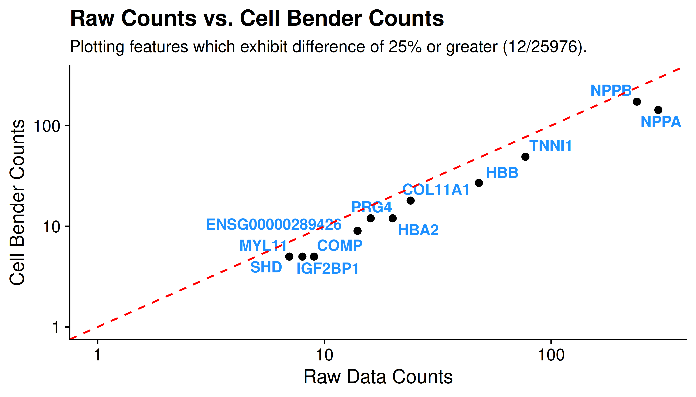
Check quality control parameters before filtering.
p1 <- VlnPlot(RVS_preQC, features = "nCount_RNA", group.by = "Sample", pt.size = 0) + theme(axis.title.x = element_blank()) + NoLegend()
p2 <- VlnPlot(RVS_preQC, features = "nFeature_RNA", group.by = "Sample", pt.size = 0) + theme(axis.title.x = element_blank()) + NoLegend()
p3 <- VlnPlot(RVS_preQC, features = "percent.mt", group.by = "Sample", pt.size = 0) + theme(axis.title.x = element_blank()) + NoLegend()
p4 <- VlnPlot(RVS_preQC, features = "percent.rp", group.by = "Sample", pt.size = 0) + theme(axis.title.x = element_blank()) + NoLegend()
QC_pre_VlnPlots <- p1 + p2 + p3 + p4 + plot_layout(ncol = 4)
QC_pre_VlnPlots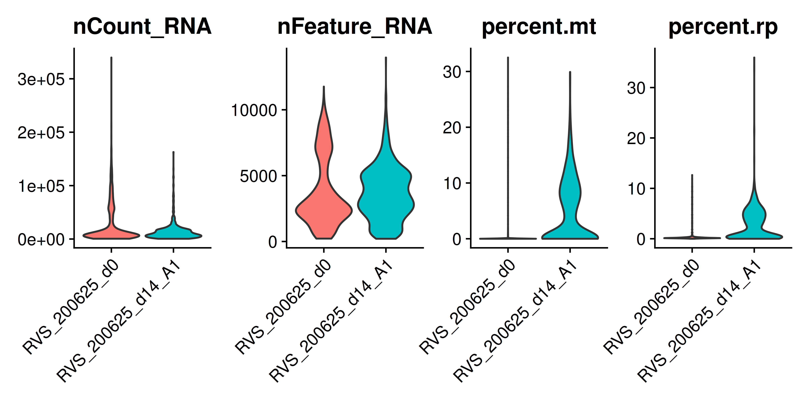
p1 <- VlnPlot(RVS_preQC, features = "nCount_RNA", group.by = "Sample", pt.size = 0, y.max = 20000) + theme(axis.title.x = element_blank()) + NoLegend()
p2 <- VlnPlot(RVS_preQC, features = "nFeature_RNA", group.by = "Sample", pt.size = 0, y.max = 10000) + theme(axis.title.x = element_blank()) + NoLegend()
p3 <- VlnPlot(RVS_preQC, features = "percent.mt", group.by = "Sample", pt.size = 0, y.max = 5) + theme(axis.title.x = element_blank()) + NoLegend()
p4 <- VlnPlot(RVS_preQC, features = "percent.rp", group.by = "Sample", pt.size = 0, y.max = 5) + theme(axis.title.x = element_blank()) + NoLegend()
QC_pre_VlnPlots_zoom <- p1 + p2 + p3 + p4 + plot_layout(ncol = 4)
QC_pre_VlnPlots_zoom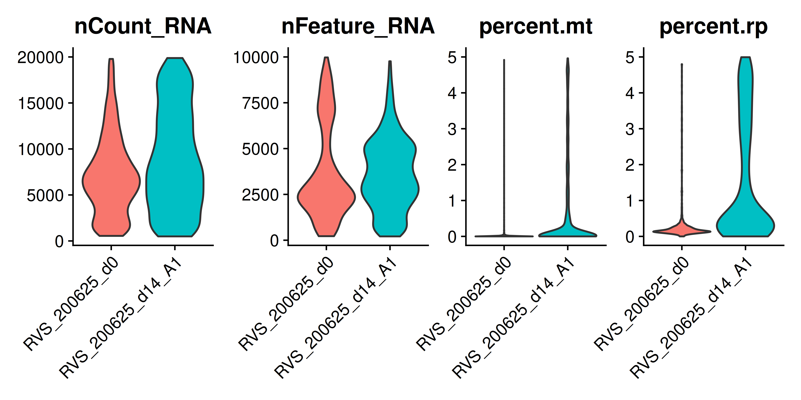
Doublet detection.
RVS_preQC_sce <- as.SingleCellExperiment(RVS_preQC)
RVS_preQC_sce <- scDblFinder(RVS_preQC_sce, samples = "Sample", clusters = TRUE) | | | 0% | |=================================== | 50% | |======================================================================| 100%table(RVS_preQC_sce@colData$scDblFinder.class)
singlet doublet
2767 121 RVS_preQC <- as.Seurat(RVS_preQC_sce, counts = "counts", data = "logcounts")
rm(RVS_preQC_sce)
RVS_preQC@meta.data[RVS_preQC@meta.data$scDblFinder.class %in% "singlet", "scDblFinder.n"] <- paste0("Singlets (n=", table(RVS_preQC$scDblFinder.class)["singlet"], ")")
RVS_preQC@meta.data[RVS_preQC@meta.data$scDblFinder.class %in% "doublet", "scDblFinder.n"] <- paste0("Doublets (n=", table(RVS_preQC$scDblFinder.class)["doublet"], ")")
RVS_preQC$scDblFinder.n <- factor(RVS_preQC$scDblFinder.n)p1 <- VlnPlot(RVS_preQC, features = "nCount_RNA", split.by = "scDblFinder.n", group.by = "Sample", pt.size = 0, y.max = 50000) + theme(axis.title.x = element_blank()) + NoLegend()
p2 <- VlnPlot(RVS_preQC, features = "nFeature_RNA", split.by = "scDblFinder.n", group.by = "Sample", pt.size = 0, y.max = 10000) + theme(axis.title.x = element_blank())
QC_pre_Doublets <- p1 + p2 + plot_layout(ncol = 2)
QC_pre_Doublets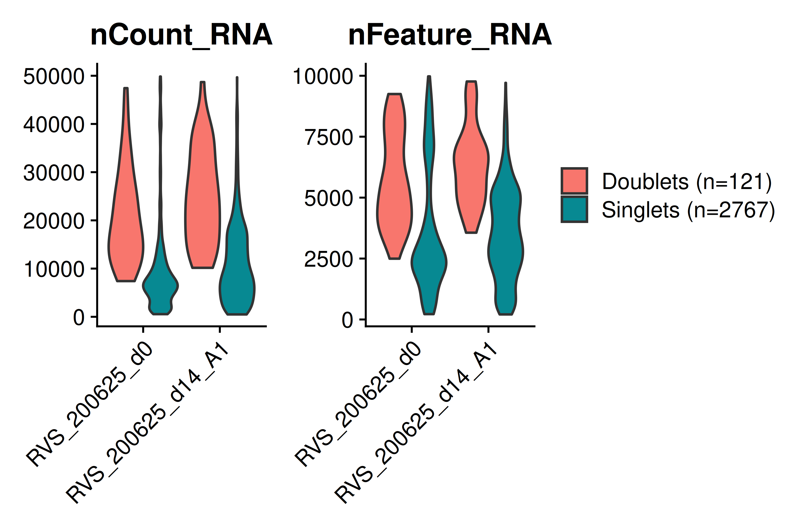
qs_save(
RVS_preQC,
file = here::here(output_dir_data, "RVS_preQC.qs2"),
nthreads = 32
)Remove doublets.
RVS <- subset(RVS_preQC, subset = scDblFinder.class == "singlet")
table(RVS$scDblFinder.class)
singlet doublet
2767 0 rm(RVS_preQC)
RVS@assays[["RAW"]] <- NULL
DefaultAssay(RVS) <- "RNA"Check quality control parameters after removing doublets.
p1 <- VlnPlot(RVS, features = "nCount_RNA", group.by = "Sample", pt.size = 0) + theme(axis.title.x = element_blank()) + NoLegend()
p2 <- VlnPlot(RVS, features = "nFeature_RNA", group.by = "Sample", pt.size = 0) + theme(axis.title.x = element_blank()) + NoLegend()
p3 <- VlnPlot(RVS, features = "percent.mt", group.by = "Sample", pt.size = 0) + theme(axis.title.x = element_blank()) + NoLegend()
p4 <- VlnPlot(RVS, features = "percent.rp", group.by = "Sample", pt.size = 0) + theme(axis.title.x = element_blank()) + NoLegend()
QC_pre_no_doublets_VlnPlots <- p1 + p2 + p3 + p4 + plot_layout(ncol = 4)
QC_pre_no_doublets_VlnPlots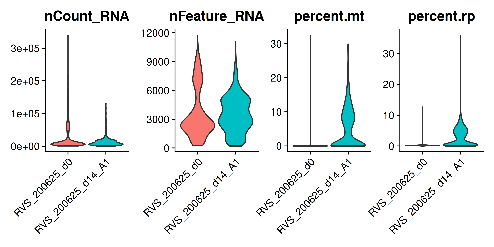
p1 <- VlnPlot(RVS, features = "nCount_RNA", group.by = "Sample", pt.size = 0, y.max = 20000) + theme(axis.title.x = element_blank()) + NoLegend()
p2 <- VlnPlot(RVS, features = "nFeature_RNA", group.by = "Sample", pt.size = 0, y.max = 10000) + theme(axis.title.x = element_blank()) + NoLegend()
p3 <- VlnPlot(RVS, features = "percent.mt", group.by = "Sample", pt.size = 0, y.max = 5) + theme(axis.title.x = element_blank()) + NoLegend()
p4 <- VlnPlot(RVS, features = "percent.rp", group.by = "Sample", pt.size = 0, y.max = 5) + theme(axis.title.x = element_blank()) + NoLegend()
QC_pre_no_doublets_VlnPlots_zoom <- p1 + p2 + p3 + p4 + plot_layout(ncol = 4)
QC_pre_no_doublets_VlnPlots_zoom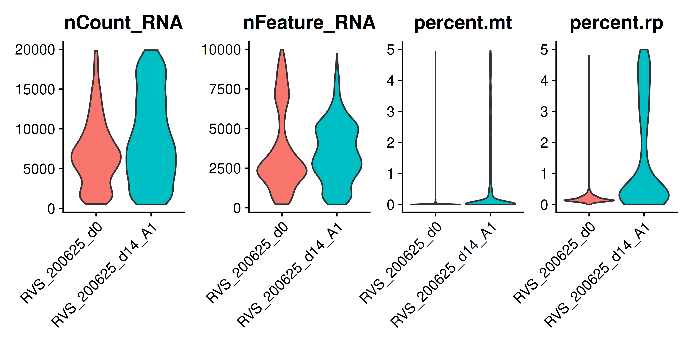
Filter based on number of counts, features, and percentage of mitochondrial genes.
RVS <- subset(
RVS,
subset = nFeature_RNA > 300 &
percent.mt < 20 &
nCount_RNA > 500 &
nCount_RNA < 100000
)
table(RVS$Sample)
RVS_200625_d0 RVS_200625_d14_A1
1496 1116 cell_type_cols <- c("#d05050", "#33A02C", "#1F78B4", "#CAB2D6", "#FF7F00", "#B2DF8A", "#B15928", "#FFD000", "#FA95C0", "#FDBF6F", "#6A3D9A", "#7aCDF9", "#E6E600", "#8DD3C7", "#FB8072")
sample_cols <- c(
"RVS_200625_d0" = "#BDBDBD",
"RVS_200625_d14_A1" = "#B85C4A"
)
cluster_cols <- DiscretePalette_scCustomize(num_colors = 20, palette = "polychrome", shuffle_pal = TRUE, seed = 220510)PalettePlot(cell_type_cols) + PalettePlot(sample_cols) + PalettePlot(cluster_cols)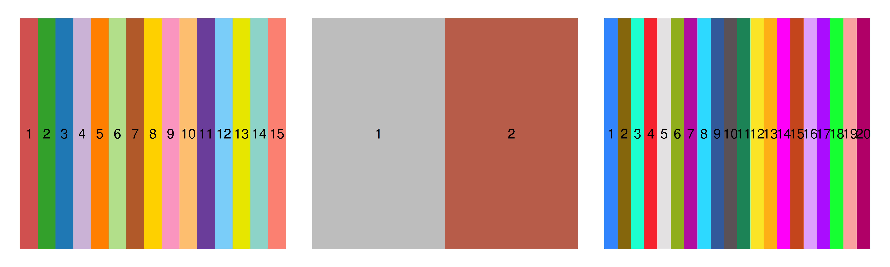
Check quality control parameters after filtering.
p1 <- VlnPlot(RVS, features = "nCount_RNA", group.by = "Sample", pt.size = 0) + theme(axis.title.x = element_blank()) + NoLegend()
p2 <- VlnPlot(RVS, features = "nFeature_RNA", group.by = "Sample", pt.size = 0) + theme(axis.title.x = element_blank()) + NoLegend()
p3 <- VlnPlot(RVS, features = "percent.mt", group.by = "Sample", pt.size = 0) + theme(axis.title.x = element_blank()) + NoLegend()
p4 <- VlnPlot(RVS, features = "percent.rp", group.by = "Sample", pt.size = 0) + theme(axis.title.x = element_blank()) + NoLegend()
QC_post_VlnPlots <- p1 + p2 + p3 + p4 + plot_layout(ncol = 4)
QC_post_VlnPlots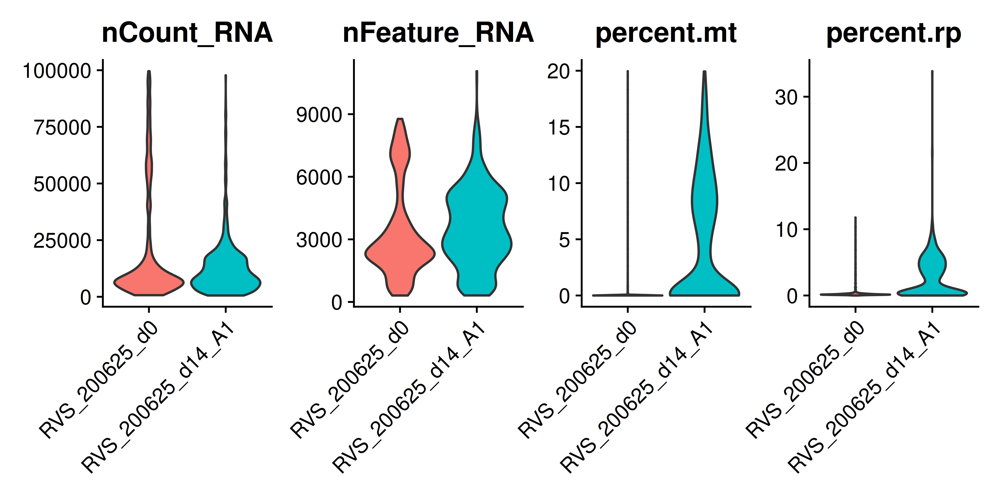
p1 <- VlnPlot(RVS, features = "nCount_RNA", group.by = "Sample", pt.size = 0, y.max = 20000) + theme(axis.title.x = element_blank()) + NoLegend()
p2 <- VlnPlot(RVS, features = "nFeature_RNA", group.by = "Sample", pt.size = 0, y.max = 10000) + theme(axis.title.x = element_blank()) + NoLegend()
p3 <- VlnPlot(RVS, features = "percent.mt", group.by = "Sample", pt.size = 0, y.max = 5) + theme(axis.title.x = element_blank()) + NoLegend()
p4 <- VlnPlot(RVS, features = "percent.rp", group.by = "Sample", pt.size = 0, y.max = 5) + theme(axis.title.x = element_blank()) + NoLegend()
QC_post_VlnPlots_zoom <- p1 + p2 + p3 + p4 + plot_layout(ncol = 4)
QC_post_VlnPlots_zoom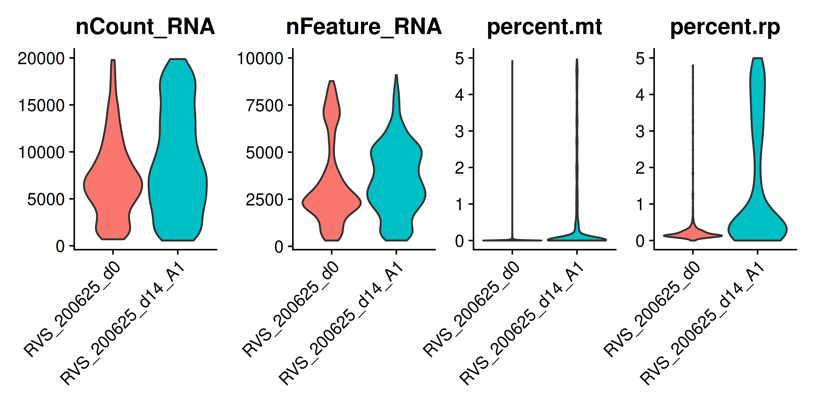
Integration and clustering
Normalize and scale using SCTransform.
DefaultAssay(RVS) <- "RNA"
RVS <- SplitObject(RVS, split.by = "Sample")
for (i in 1:length(RVS)) {
RVS[[i]] <- SCTransform(
RVS[[i]],
vst.flavor = "v2",
vars.to.regress = c("percent.mt"),
return.only.var.genes = TRUE,
variable.features.n = 3000,
method = "glmGamPoi"
)
}PCA.
features <- SelectIntegrationFeatures(object.list = RVS, nfeatures = 3000)
RVS <- merge(x = RVS[[1]], y = RVS[2:length(RVS)], merge.data = TRUE)
VariableFeatures(RVS) <- features
RVS <- RunPCA(RVS, npcs = 50)ElbowPlot(RVS, ndims = 50)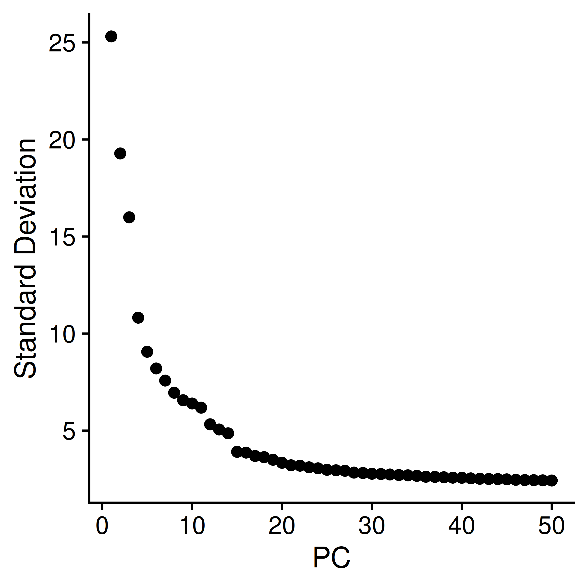
Clustering without integration.
DefaultAssay(RVS) <- "SCT"
RVS <- RunUMAP(RVS, dims = 1:50)
RVS <- FindNeighbors(RVS, dims = 1:50)
RVS <- FindClusters(RVS, resolution = seq(0.1, 0.8, by = 0.1))Modularity Optimizer version 1.3.0 by Ludo Waltman and Nees Jan van Eck
Number of nodes: 2612
Number of edges: 98183
Running Louvain algorithm...
Maximum modularity in 10 random starts: 0.9744
Number of communities: 11
Elapsed time: 0 seconds
Modularity Optimizer version 1.3.0 by Ludo Waltman and Nees Jan van Eck
Number of nodes: 2612
Number of edges: 98183
Running Louvain algorithm...
Maximum modularity in 10 random starts: 0.9555
Number of communities: 12
Elapsed time: 0 seconds
Modularity Optimizer version 1.3.0 by Ludo Waltman and Nees Jan van Eck
Number of nodes: 2612
Number of edges: 98183
Running Louvain algorithm...
Maximum modularity in 10 random starts: 0.9379
Number of communities: 14
Elapsed time: 0 seconds
Modularity Optimizer version 1.3.0 by Ludo Waltman and Nees Jan van Eck
Number of nodes: 2612
Number of edges: 98183
Running Louvain algorithm...
Maximum modularity in 10 random starts: 0.9215
Number of communities: 17
Elapsed time: 0 seconds
Modularity Optimizer version 1.3.0 by Ludo Waltman and Nees Jan van Eck
Number of nodes: 2612
Number of edges: 98183
Running Louvain algorithm...
Maximum modularity in 10 random starts: 0.9071
Number of communities: 17
Elapsed time: 0 seconds
Modularity Optimizer version 1.3.0 by Ludo Waltman and Nees Jan van Eck
Number of nodes: 2612
Number of edges: 98183
Running Louvain algorithm...
Maximum modularity in 10 random starts: 0.8955
Number of communities: 18
Elapsed time: 0 seconds
Modularity Optimizer version 1.3.0 by Ludo Waltman and Nees Jan van Eck
Number of nodes: 2612
Number of edges: 98183
Running Louvain algorithm...
Maximum modularity in 10 random starts: 0.8845
Number of communities: 18
Elapsed time: 0 seconds
Modularity Optimizer version 1.3.0 by Ludo Waltman and Nees Jan van Eck
Number of nodes: 2612
Number of edges: 98183
Running Louvain algorithm...
Maximum modularity in 10 random starts: 0.8742
Number of communities: 20
Elapsed time: 0 secondsclustree::clustree(
RVS@meta.data[, grep("SCT_snn_res", colnames(RVS@meta.data))],
prefix = "SCT_snn_res."
)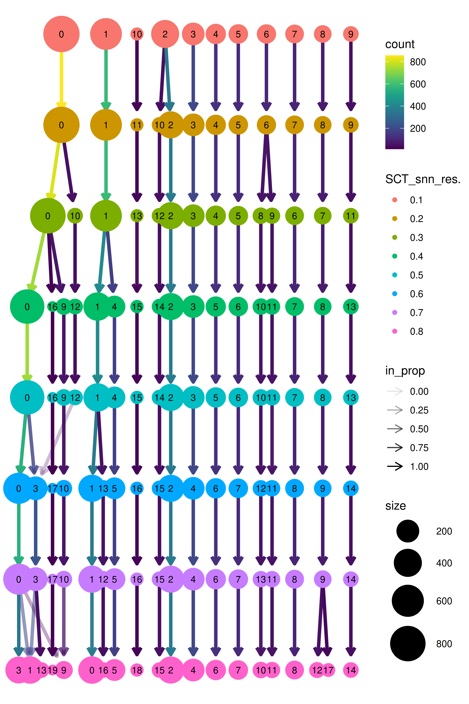
DimPlot(
RVS,
reduction = "umap",
shuffle = TRUE,
group.by = c("SCT_snn_res.0.3", "Sample"),
ncol = 2,
label = TRUE
)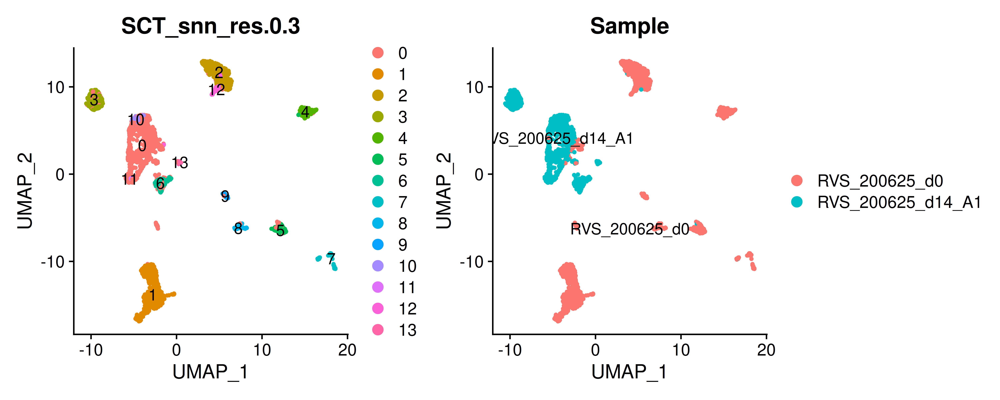
Integrate the samples using Harmony.
RVS <- RunHarmony(
RVS,
assay.use = "SCT",
group.by.vars = "Sample",
dims.use = 1:50,
plot_convergence = TRUE,
.options = harmony_options(max.iter.cluster = 100)
)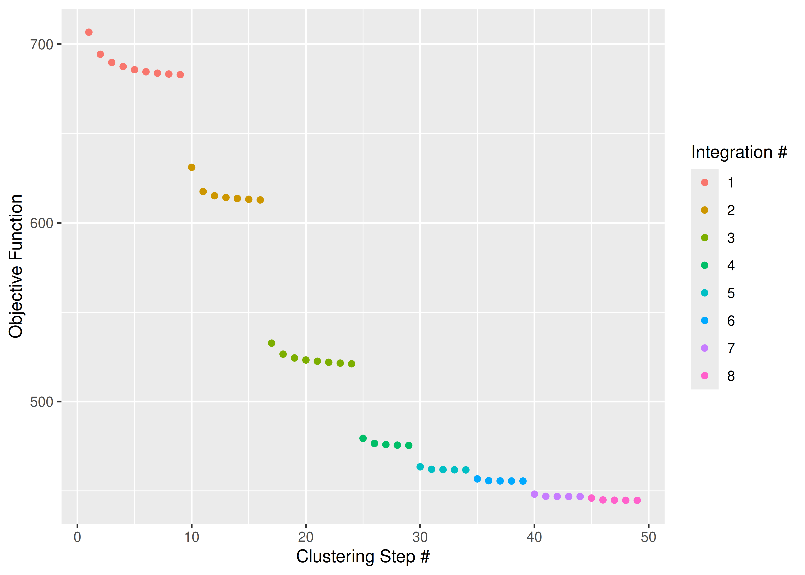
Clustering after integration.
DefaultAssay(RVS) <- "SCT"
RVS <- RunUMAP(RVS, dims = 1:50, reduction = "harmony")
RVS <- FindNeighbors(RVS, dims = 1:50, reduction = "harmony")
RVS <- FindClusters(RVS, resolution = seq(0.1, 0.8, by = 0.1))Modularity Optimizer version 1.3.0 by Ludo Waltman and Nees Jan van Eck
Number of nodes: 2612
Number of edges: 101340
Running Louvain algorithm...
Maximum modularity in 10 random starts: 0.9719
Number of communities: 9
Elapsed time: 0 seconds
Modularity Optimizer version 1.3.0 by Ludo Waltman and Nees Jan van Eck
Number of nodes: 2612
Number of edges: 101340
Running Louvain algorithm...
Maximum modularity in 10 random starts: 0.9555
Number of communities: 11
Elapsed time: 0 seconds
Modularity Optimizer version 1.3.0 by Ludo Waltman and Nees Jan van Eck
Number of nodes: 2612
Number of edges: 101340
Running Louvain algorithm...
Maximum modularity in 10 random starts: 0.9415
Number of communities: 12
Elapsed time: 0 seconds
Modularity Optimizer version 1.3.0 by Ludo Waltman and Nees Jan van Eck
Number of nodes: 2612
Number of edges: 101340
Running Louvain algorithm...
Maximum modularity in 10 random starts: 0.9292
Number of communities: 13
Elapsed time: 0 seconds
Modularity Optimizer version 1.3.0 by Ludo Waltman and Nees Jan van Eck
Number of nodes: 2612
Number of edges: 101340
Running Louvain algorithm...
Maximum modularity in 10 random starts: 0.9194
Number of communities: 14
Elapsed time: 0 seconds
Modularity Optimizer version 1.3.0 by Ludo Waltman and Nees Jan van Eck
Number of nodes: 2612
Number of edges: 101340
Running Louvain algorithm...
Maximum modularity in 10 random starts: 0.9097
Number of communities: 14
Elapsed time: 0 seconds
Modularity Optimizer version 1.3.0 by Ludo Waltman and Nees Jan van Eck
Number of nodes: 2612
Number of edges: 101340
Running Louvain algorithm...
Maximum modularity in 10 random starts: 0.9001
Number of communities: 15
Elapsed time: 0 seconds
Modularity Optimizer version 1.3.0 by Ludo Waltman and Nees Jan van Eck
Number of nodes: 2612
Number of edges: 101340
Running Louvain algorithm...
Maximum modularity in 10 random starts: 0.8906
Number of communities: 15
Elapsed time: 0 secondsclustree::clustree(
RVS@meta.data[, grep("SCT_snn_res", colnames(RVS@meta.data))],
prefix = "SCT_snn_res."
)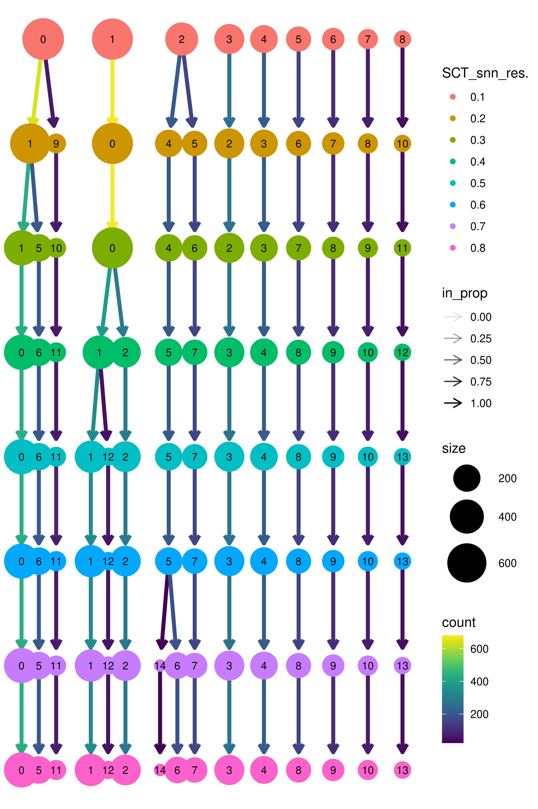
DimPlot(
RVS,
reduction = "umap",
shuffle = TRUE,
group.by = c("SCT_snn_res.0.7", "Sample"),
ncol = 2,
label = FALSE
)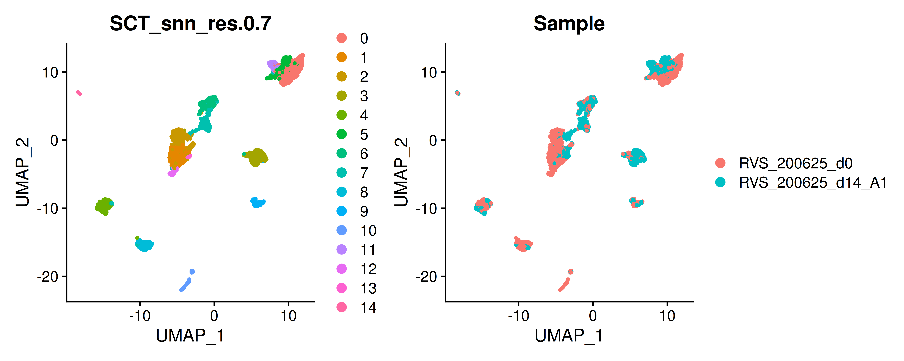
DimPlot(
RVS,
reduction = "umap",
shuffle = TRUE,
group.by = c("SCT_snn_res.0.7", "Sample"),
ncol = 2,
label = TRUE
)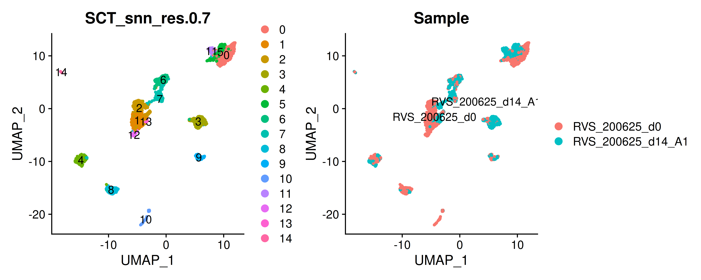
Find marker genes for the integrated clusters before possible removal of low-quality cells.
DefaultAssay(RVS) <- "RNA"
RVS <- NormalizeData(RVS)
Idents(RVS) <- "SCT_snn_res.0.7"
Markers <- FindAllMarkers(RVS, only.pos = TRUE, min.pct = 0.5, logfc.threshold = 1)
write.csv(Markers, here::here(output_dir_data, "RVS_Markers_all_low_quality.csv"))
Markers_top10 <- as.data.frame(Markers %>% group_by(cluster) %>% top_n(n = 10, wt = avg_log2FC))
write.csv(Markers_top10, here::here(output_dir_data, "RVS_Markers_top10_low_quality.csv"))
Markers_top3 <- as.data.frame(Markers %>% group_by(cluster) %>% top_n(n = 3, wt = avg_log2FC))
write.csv(Markers_top3, here::here(output_dir_data, "RVS_Markers_top3_low_quality.csv"))heatmap_cols <- colorRampPalette(RColorBrewer::brewer.pal(9, "RdBu"))(256)
heatmap_cols <- rev(heatmap_cols[1:256])
Heatmap <- DoHeatmap(
RVS,
label = FALSE,
draw.line = FALSE,
features = Markers_top10$gene,
assay = "SCT"
) +
scale_fill_gradientn(colours = heatmap_cols) +
theme(axis.text.y = element_text(size = 5)) +
theme(plot.margin = unit(c(0.1, 0, 0, 0), "inches"))
Heatmap
Check QC parameters in each cluster.
VlnPlot(
RVS,
features = c("nCount_RNA", "nFeature_RNA", "percent.mt", "percent.rp", "scDblFinder.score"),
ncol = 3,
pt.size = 0
) + theme(axis.title.x = element_blank())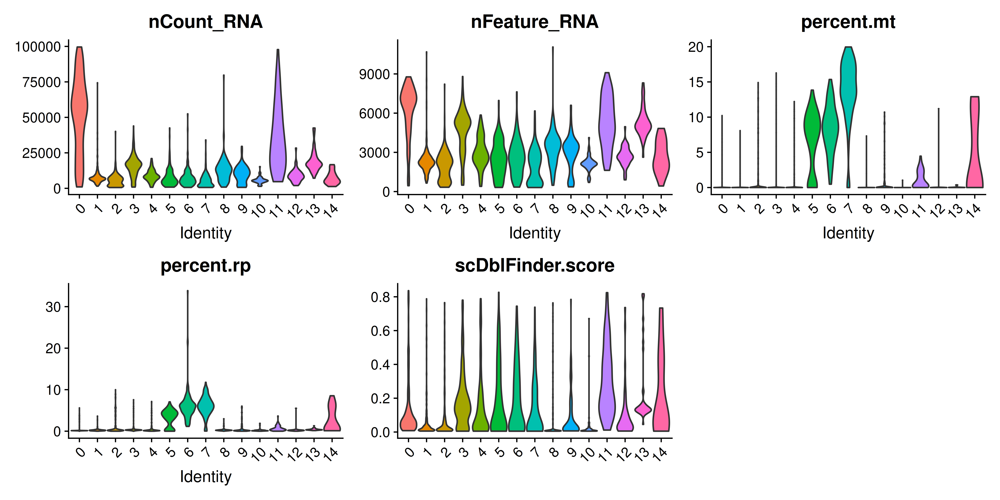
Check cell cycle genes.
s.genes <- cc.genes$s.genes
g2m.genes <- cc.genes$g2m.genes
RVS <- CellCycleScoring(RVS, s.features = s.genes, g2m.features = g2m.genes)
DimPlot(
RVS,
reduction = "umap",
shuffle = TRUE,
group.by = "Phase"
)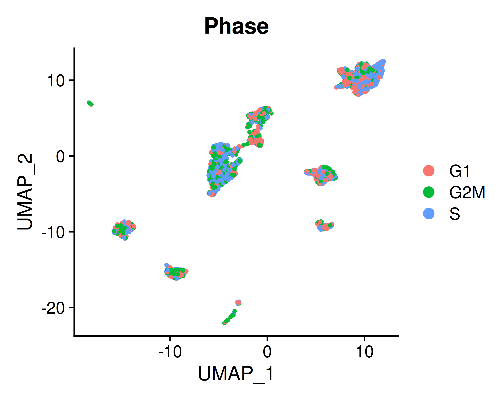
Cell type annotation
Placeholder annotation based on resolution 0.3. Change this after checking the marker genes.
cluster_annotation <- c( "0" = "CM I", "1" = "EC I", "2" = "EC II", "3" = "Fibroblasts", "4" = "Pericytes", "5" = "CM high MT I", "6" = "CM high MT II", "7" = "CM high MT III", "8" = "Macrophages", "9" = "Smooth Muscle Cells", "10" = "T cells", "11" = "CM II", "12" = "EC III", "13" = "EC IV", "14" = "Neuronal" )
RVS$cell_type <- plyr::mapvalues( x = as.character(RVS$SCT_snn_res.0.7), from = names(cluster_annotation), to = unname(cluster_annotation) )
cell_type_counts <- sort(table(RVS$cell_type), decreasing = TRUE)
cm_levels <- c(
"CM I",
"CM II",
"CM high MT I",
"CM high MT II",
"CM high MT III"
)
ec_levels <- c(
"EC I",
"EC II",
"EC III",
"EC IV"
)
other_levels <- names(cell_type_counts)[
!names(cell_type_counts) %in% c(cm_levels, ec_levels)
]
new_cell_type_levels <- c(
cm_levels,
ec_levels,
other_levels
)
RVS$cell_type <- factor(
RVS$cell_type,
levels = new_cell_type_levels
)
Idents(RVS) <- RVS$cell_type
table(RVS$cell_type, useNA = "ifany")
CM I CM II CM high MT I CM high MT II
435 70 206 182
CM high MT III EC I EC II EC III
159 338 292 51
EC IV Fibroblasts Pericytes Macrophages
43 274 212 153
Smooth Muscle Cells T cells Neuronal
103 71 23 RVS <- qs_read(file = here::here(output_dir_data, "RVS.qs2"),
nthreads = 32)VlnPlot_scCustom(
RVS,
features = c("nCount_RNA", "nFeature_RNA", "percent.mt", "percent.rp", "scDblFinder.score"),
group.by = "cell_type",
num_columns = 3,
pt.size = 0,
colors_use = cell_type_cols
) & theme(axis.title.x = element_blank())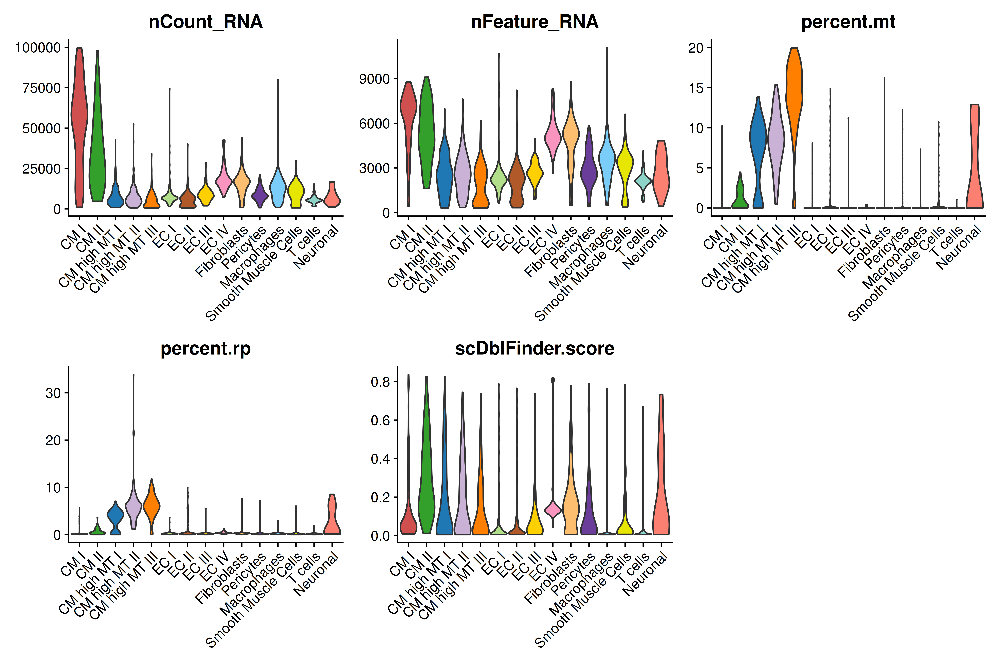
DimPlot_scCustom(RVS, group.by = "SCT_snn_res.0.3", colors_use = cluster_cols, label = TRUE)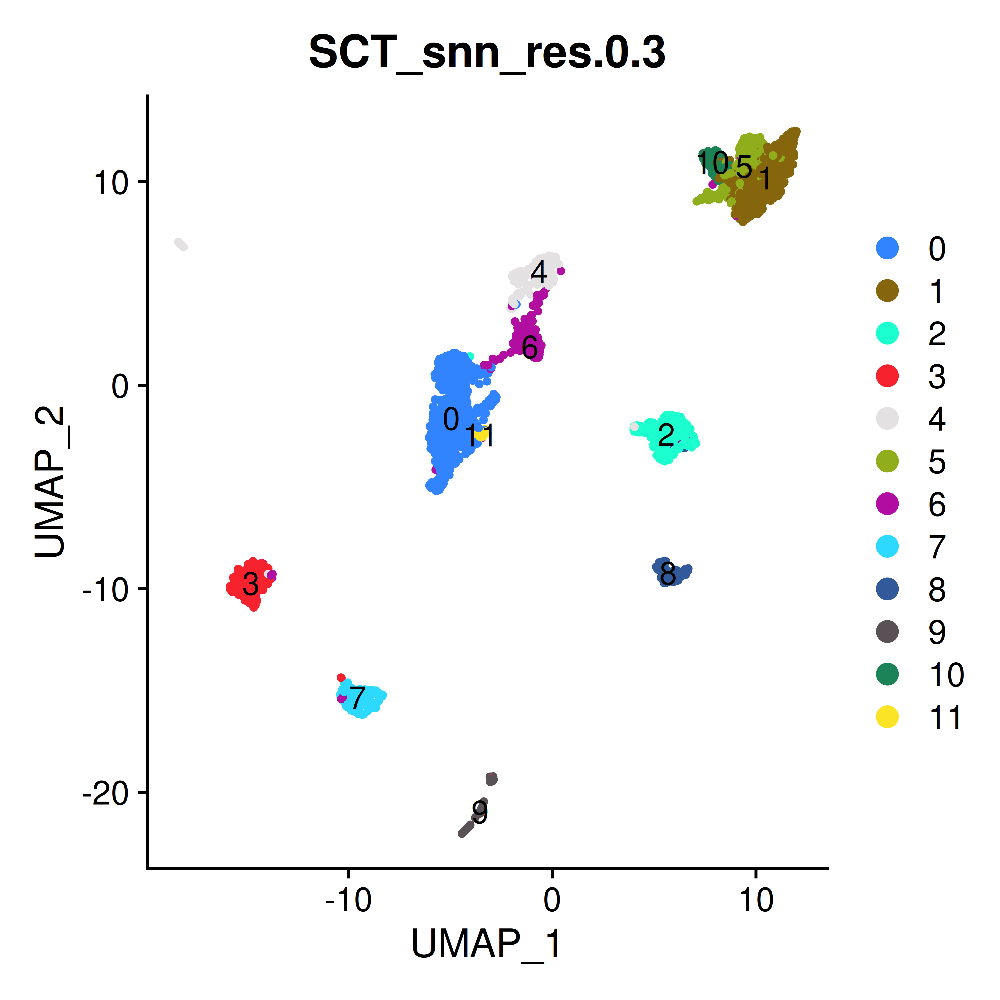
DimPlot(
RVS,
group.by = "Sample",
reduction = "umap",
cols = sample_cols,
label = FALSE,
shuffle = TRUE,
pt.size = 1
) +
NoLegend() +
theme(
axis.text = element_text(size = 8, face = "bold"),
axis.title = element_text(size = 12, face = "bold"),
plot.title = element_blank()
)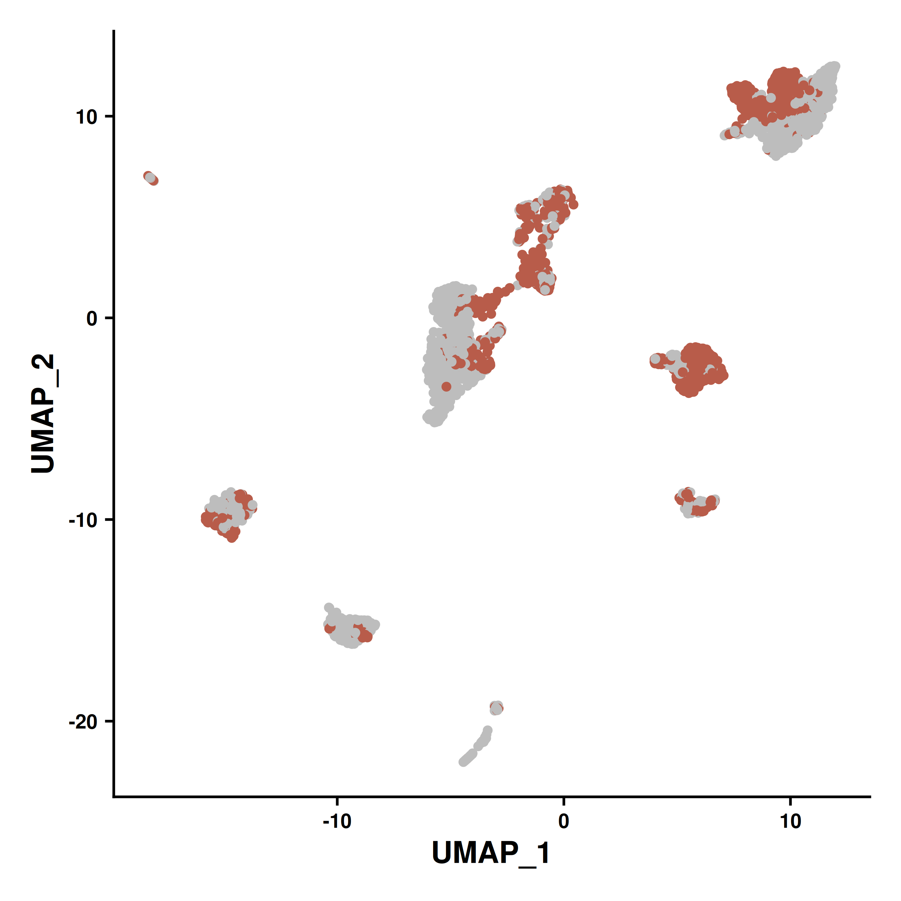
DimPlot(
RVS,
group.by = "Sample",
split.by = "Sample",
reduction = "umap",
cols = sample_cols,
label = FALSE,
shuffle = TRUE,
pt.size = 0.5
) +
NoLegend() +
theme(
axis.text = element_text(size = 8, face = "bold"),
axis.title = element_text(size = 12, face = "bold"),
plot.title = element_text(size = 12, face = "bold", hjust = 0.5),
strip.text = element_text(size = 11, face = "bold")
)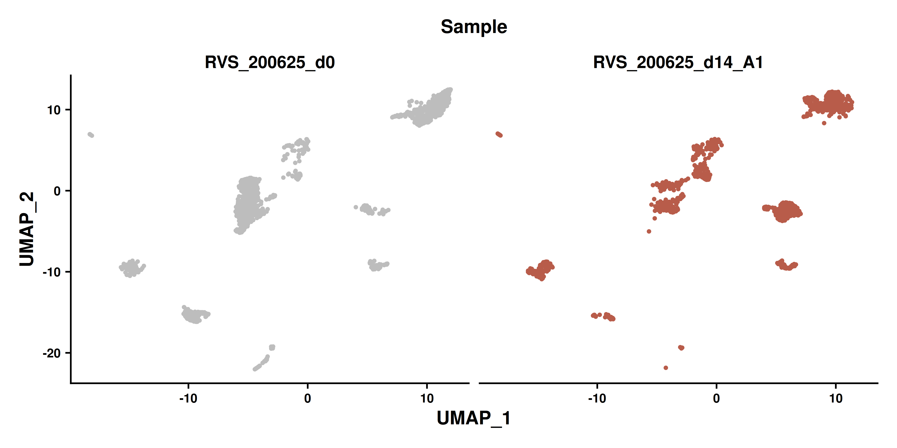
p <- DimPlot(
RVS,
group.by = "cell_type",
reduction = "umap",
cols = cell_type_cols,
label = FALSE,
shuffle = TRUE,
pt.size = 1
) +
NoLegend() +
theme(
axis.text = element_text(size = 8, face = "bold"),
axis.title = element_text(size = 12, face = "bold"),
plot.title = element_blank()
)
LabelClusters(
p,
id = "cell_type",
size = 4,
repel = TRUE
)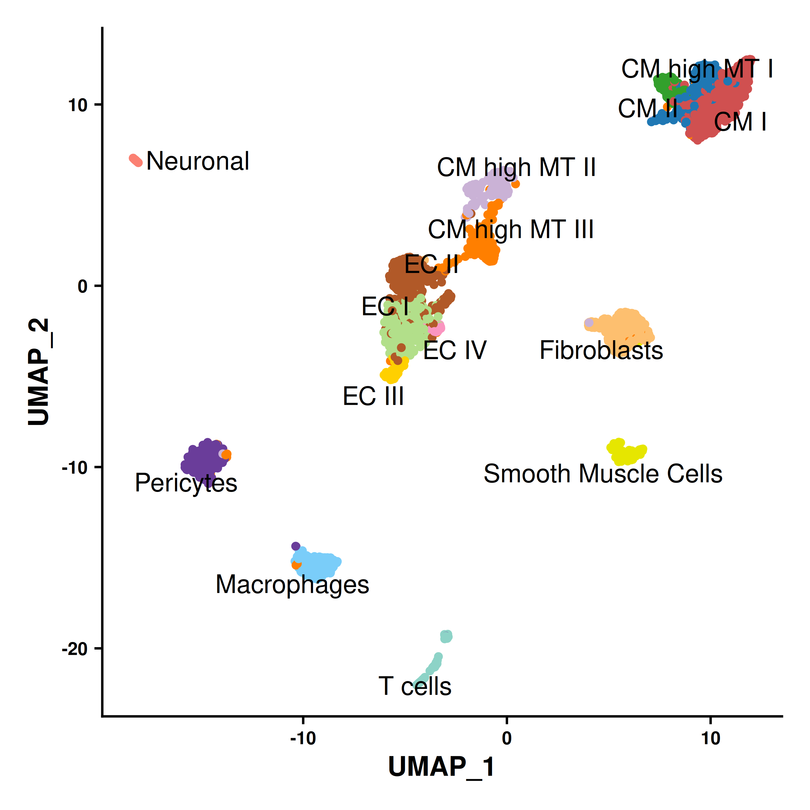
FeaturePlot(
RVS,
features = "percent.mt",
reduction = "umap",
pt.size = 1,
order = TRUE
) +
scale_color_gradientn(
colors = c("grey90", "#FDBF6F", "#d05050")
) +
NoLegend() +
theme(
axis.text = element_text(size = 8, face = "bold"),
axis.title = element_text(size = 12, face = "bold"),
plot.title = element_blank()
)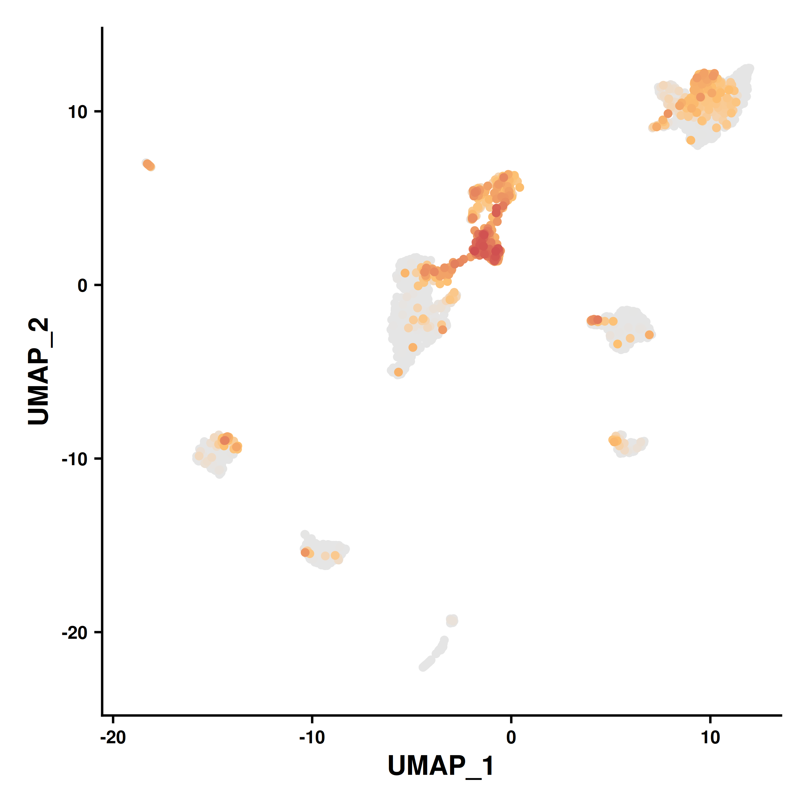
get_unique_top_markers <- function(markers, n = 10, cluster_col = "cluster", gene_col = "gene") {
markers <- markers %>%
dplyr::arrange(.data[[cluster_col]], dplyr::desc(avg_log2FC))
clusters <- unique(markers[[cluster_col]])
used_genes <- character(0)
out <- list()
for (cl in clusters) {
cl_markers <- markers %>%
dplyr::filter(.data[[cluster_col]] == cl) %>%
dplyr::filter(!.data[[gene_col]] %in% used_genes) %>%
dplyr::slice_head(n = n)
used_genes <- c(used_genes, cl_markers[[gene_col]])
out[[as.character(cl)]] <- cl_markers
}
dplyr::bind_rows(out)
}DefaultAssay(RVS) <- "RNA"
Idents(RVS) <- "cell_type"
Markers <- FindAllMarkers(RVS, only.pos = TRUE, min.pct = 0.5, logfc.threshold = 1)
write.csv(Markers, here::here(output_dir_data, "RVS_Markers_all_cell_type.csv"))
Markers_top10 <- get_unique_top_markers(
markers = Markers,
n = 10,
cluster_col = "cluster",
gene_col = "gene"
)
write.csv(Markers_top10, here::here(output_dir_data, "RVS_Markers_top10_cell_type.csv"))
Markers_top3 <- get_unique_top_markers(
markers = Markers,
n = 3,
cluster_col = "cluster",
gene_col = "gene"
)
write.csv(Markers_top3, here::here(output_dir_data, "RVS_Markers_top3_cell_type.csv"))genes.use <- intersect(Markers_top10$gene, rownames(RVS[["SCT"]]@scale.data))
DefaultAssay(RVS) <- "SCT"
Heatmap <- DoHeatmap(
RVS,
features = genes.use,
label = FALSE,
draw.line = TRUE,
group.by = "cell_type",
group.colors = cell_type_cols,
lines.width = 1
) +
scale_fill_gradientn(colours = heatmap_cols) +
theme(text = element_text(size = 15), axis.text.y = element_text(size = 6))
Heatmap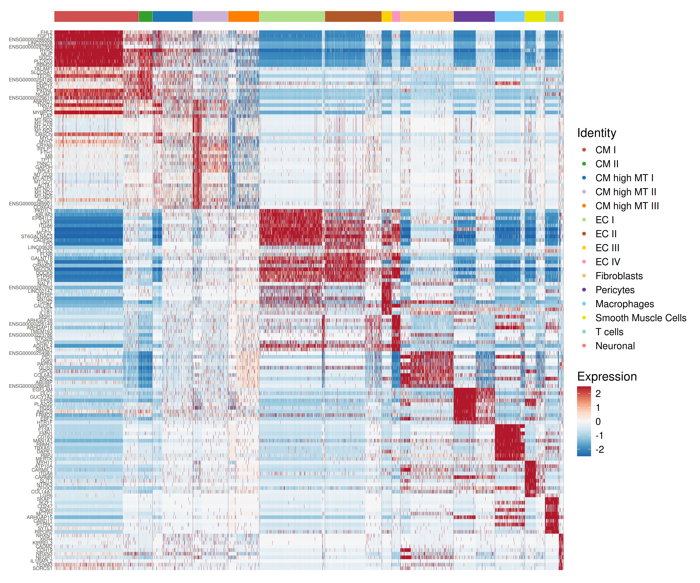
Idents(RVS) <- factor(Idents(RVS), levels = rev(levels(Idents(RVS))))
p <- DotPlot_scCustom(
RVS,
features = unique(Markers_top3$gene),
x_lab_rotate = TRUE
)
p + theme(
axis.text.x = element_text(size = 12, angle = 60, vjust = 1, hjust = 1),
axis.text.y = element_text(size = 15)
)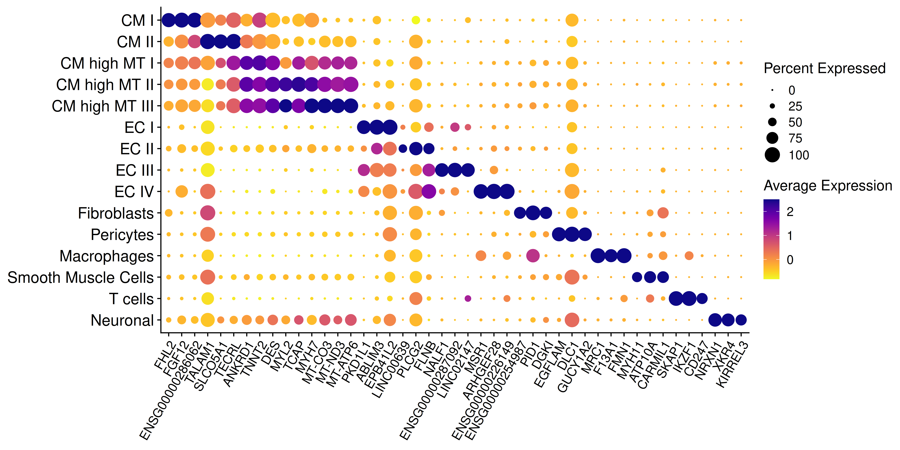
Idents(RVS) <- RVS$cell_typeFeaturePlot_scCustom(
RVS,
features = c(
"RYR2", "TTN", "COL1A1", "DCN", "VWF", "PECAM1", "RGS5",
"MRC1", "CD68", "PTPRC", "RGS6"
),
num_columns = 4,
order = FALSE
)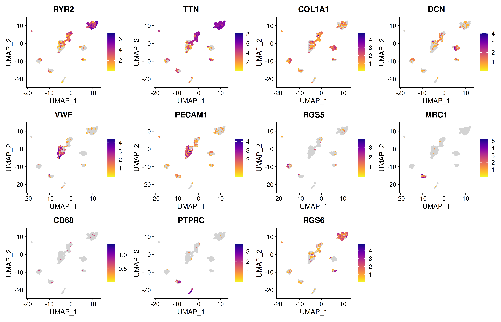
props <- getTransformedProps(RVS$cell_type, RVS$Sample, transform = "logit")
par(mar = c(14, 5, 1, 18), xpd = TRUE)
barplot(
props$Proportions,
legend = FALSE,
ylab = "Proportions",
col = cell_type_cols,
cex.names = 1.4,
las = 2,
font.lab = 2,
font.axis = 2,
cex.axis = 1,
cex.lab = 1.4
)
legend(
"topright",
inset = c(-0.8, -0),
legend = rownames(props$Proportions),
fill = cell_type_cols,
bty = "n",
cex = 1.2
)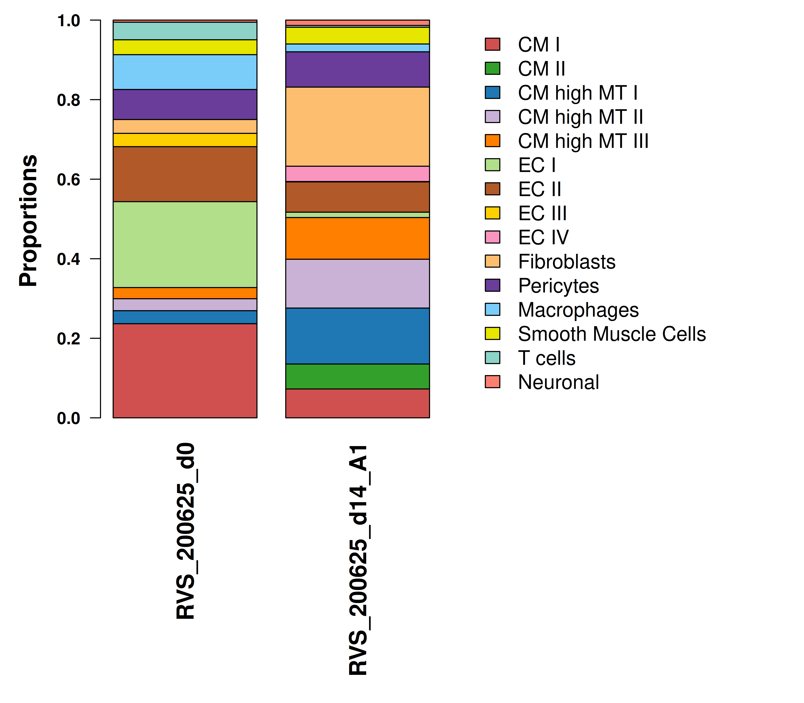
props <- getTransformedProps(RVS$Sample, RVS$cell_type, transform = "logit")
par(mar = c(12, 5, 1, 14), xpd = TRUE)
barplot(
props$Proportions,
legend = FALSE,
ylab = "Proportions",
col = sample_cols,
cex.names = 1.2,
las = 2,
font.lab = 2,
font.axis = 2,
cex.axis = 1,
cex.lab = 1.4
)
legend(
"topright",
inset = c(-0.4, 0.3),
legend = rownames(props$Proportions),
fill = sample_cols,
bty = "n",
cex = 1.2
)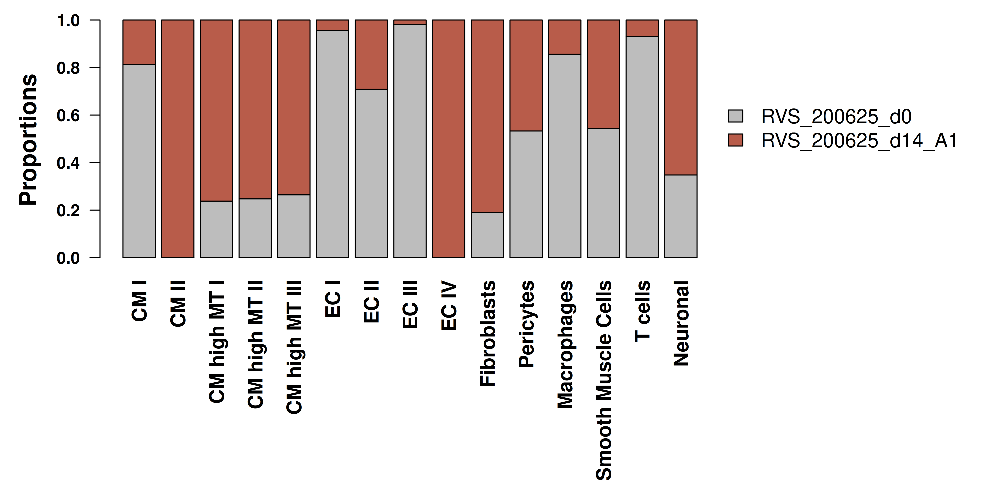
dim(RVS)[1] 24053 2612table(RVS$Sample)
RVS_200625_d0 RVS_200625_d14_A1
1496 1116 table(RVS$cell_type)
CM I CM II CM high MT I CM high MT II
435 70 206 182
CM high MT III EC I EC II EC III
159 338 292 51
EC IV Fibroblasts Pericytes Macrophages
43 274 212 153
Smooth Muscle Cells T cells Neuronal
103 71 23 table(RVS$Sample, RVS$cell_type)
CM I CM II CM high MT I CM high MT II CM high MT III EC I
RVS_200625_d0 354 0 49 45 42 323
RVS_200625_d14_A1 81 70 157 137 117 15
EC II EC III EC IV Fibroblasts Pericytes Macrophages
RVS_200625_d0 207 50 0 52 113 131
RVS_200625_d14_A1 85 1 43 222 99 22
Smooth Muscle Cells T cells Neuronal
RVS_200625_d0 56 66 8
RVS_200625_d14_A1 47 5 15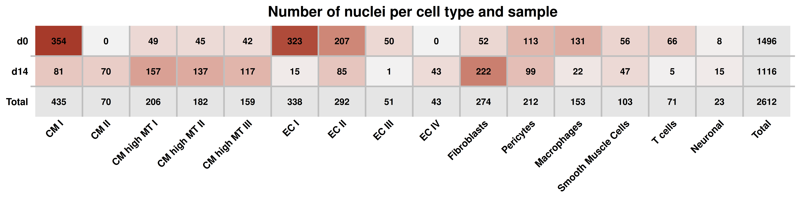
Save final objects
qs_save(
RVS,
file = here::here(output_dir_data, "RVS.qs2"),
nthreads = 32
)RVS_RNA <- RVS
RVS_RNA@assays[["SCT"]] <- NULL
DefaultAssay(RVS_RNA) <- "RNA"
qs_save(
RVS_RNA,
file = here::here(output_dir_data, "RVS_RNA.qs2"),
nthreads = 32
)
rm(RVS_RNA)
sessionInfo()R version 4.5.2 (2025-10-31)
Platform: x86_64-pc-linux-gnu
Running under: Ubuntu 24.04.3 LTS
Matrix products: default
BLAS: /usr/lib/x86_64-linux-gnu/openblas-pthread/libblas.so.3
LAPACK: /usr/lib/x86_64-linux-gnu/openblas-pthread/libopenblasp-r0.3.26.so; LAPACK version 3.12.0
locale:
[1] LC_CTYPE=en_US.UTF-8 LC_NUMERIC=C
[3] LC_TIME=en_US.UTF-8 LC_COLLATE=en_US.UTF-8
[5] LC_MONETARY=en_US.UTF-8 LC_MESSAGES=en_US.UTF-8
[7] LC_PAPER=en_US.UTF-8 LC_NAME=C
[9] LC_ADDRESS=C LC_TELEPHONE=C
[11] LC_MEASUREMENT=en_US.UTF-8 LC_IDENTIFICATION=C
time zone: Etc/UTC
tzcode source: system (glibc)
attached base packages:
[1] stats4 stats graphics grDevices datasets utils methods
[8] base
other attached packages:
[1] future_1.68.0 qs2_0.1.7
[3] speckle_1.10.0 harmony_1.2.4
[5] Rcpp_1.1.0 clustree_0.5.1
[7] ggraph_2.2.2 statmod_1.5.1
[9] patchwork_1.3.2 scater_1.38.0
[11] scuttle_1.20.0 Matrix.utils_0.9.7
[13] RColorBrewer_1.1-3 scales_1.4.0
[15] knitr_1.50 gridExtra_2.3
[17] png_0.1-8 pheatmap_1.0.13
[19] reshape2_1.4.5 lubridate_1.9.4
[21] forcats_1.0.1 stringr_1.6.0
[23] purrr_1.2.0 tidyr_1.3.1
[25] tibble_3.3.0 tidyverse_2.0.0
[27] magrittr_2.0.4 ggplot2_4.0.1
[29] dplyr_1.1.4 scCustomize_3.2.2
[31] scDblFinder_1.24.0 Matrix_1.6-5
[33] DropletUtils_1.30.0 SingleCellExperiment_1.32.0
[35] SummarizedExperiment_1.40.0 Biobase_2.70.0
[37] GenomicRanges_1.62.0 Seqinfo_1.0.0
[39] IRanges_2.44.0 S4Vectors_0.48.0
[41] BiocGenerics_0.56.0 generics_0.1.4
[43] MatrixGenerics_1.22.0 matrixStats_1.5.0
[45] SeuratObject_5.0.2 Seurat_4.4.0
[47] readxl_1.4.5 readr_2.1.6
[49] here_1.0.2 workflowr_1.7.2
loaded via a namespace (and not attached):
[1] R.methodsS3_1.8.2 goftest_1.2-3
[3] Biostrings_2.78.0 HDF5Array_1.38.0
[5] vctrs_0.6.5 spatstat.random_3.4-3
[7] digest_0.6.39 shape_1.4.6.1
[9] git2r_0.36.2 ggrepel_0.9.6
[11] deldir_2.0-4 parallelly_1.45.1
[13] renv_1.1.5 MASS_7.3-65
[15] httpuv_1.6.16 withr_3.0.2
[17] ggrastr_1.0.2 xfun_0.54
[19] survival_3.8-3 memoise_2.0.1
[21] ggbeeswarm_0.7.3 janitor_2.2.1
[23] zoo_1.8-14 GlobalOptions_0.1.3
[25] pbapply_1.7-4 R.oo_1.27.1
[27] rematch2_2.1.2 promises_1.5.0
[29] otel_0.2.0 httr_1.4.7
[31] restfulr_0.0.16 globals_0.18.0
[33] fitdistrplus_1.2-4 rhdf5filters_1.22.0
[35] ps_1.9.1 stringfish_0.18.0
[37] rhdf5_2.54.0 rstudioapi_0.17.1
[39] UCSC.utils_1.6.0 miniUI_0.1.2
[41] processx_3.8.6 curl_7.0.0
[43] ScaledMatrix_1.18.0 h5mread_1.2.1
[45] polyclip_1.10-7 SparseArray_1.10.4
[47] xtable_1.8-4 evaluate_1.0.5
[49] S4Arrays_1.10.1 hms_1.1.4
[51] irlba_2.3.5.1 colorspace_2.1-2
[53] hdf5r_1.3.12 ROCR_1.0-11
[55] reticulate_1.44.1 spatstat.data_3.1-9
[57] lmtest_0.9-40 snakecase_0.11.1
[59] later_1.4.4 viridis_0.6.5
[61] lattice_0.22-7 glmGamPoi_1.22.0
[63] spatstat.geom_3.6-1 future.apply_1.20.0
[65] getPass_0.2-4 scattermore_1.2
[67] XML_3.99-0.20 cowplot_1.2.0
[69] RcppAnnoy_0.0.22 pillar_1.11.1
[71] nlme_3.1-168 compiler_4.5.2
[73] beachmat_2.26.0 RSpectra_0.16-2
[75] stringi_1.8.7 tensor_1.5.1
[77] GenomicAlignments_1.46.0 plyr_1.8.9
[79] crayon_1.5.3 abind_1.4-8
[81] BiocIO_1.20.0 locfit_1.5-9.12
[83] sp_2.2-0 graphlayouts_1.2.2
[85] bit_4.6.0 whisker_0.4.1
[87] codetools_0.2-20 BiocSingular_1.26.1
[89] bslib_0.9.0 paletteer_1.6.0
[91] plotly_4.11.0 mime_0.13
[93] splines_4.5.2 circlize_0.4.16
[95] sparseMatrixStats_1.22.0 prismatic_1.1.2
[97] cellranger_1.1.0 grr_0.9.5
[99] utf8_1.2.6 fs_1.6.6
[101] listenv_0.10.0 checkmate_2.3.3
[103] DelayedMatrixStats_1.32.0 callr_3.7.6
[105] tzdb_0.5.0 tweenr_2.0.3
[107] pkgconfig_2.0.3 tools_4.5.2
[109] cachem_1.1.0 RhpcBLASctl_0.23-42
[111] cigarillo_1.0.0 viridisLite_0.4.2
[113] fastmap_1.2.0 rmarkdown_2.30
[115] grid_4.5.2 ica_1.0-3
[117] Rsamtools_2.26.0 sass_0.4.10
[119] ggprism_1.0.7 BiocManager_1.30.27
[121] dotCall64_1.2 RANN_2.6.2
[123] farver_2.1.2 tidygraph_1.3.1
[125] yaml_2.3.11 rtracklayer_1.70.0
[127] cli_3.6.5 leiden_0.4.3.1
[129] lifecycle_1.0.4 uwot_0.2.4
[131] bluster_1.20.0 backports_1.5.0
[133] BiocParallel_1.44.0 timechange_0.3.0
[135] gtable_0.3.6 rjson_0.2.23
[137] ggridges_0.5.7 progressr_0.18.0
[139] parallel_4.5.2 limma_3.66.0
[141] jsonlite_2.0.0 edgeR_4.8.0
[143] bitops_1.0-9 bit64_4.6.0-1
[145] xgboost_3.1.2.1 Rtsne_0.17
[147] spatstat.utils_3.2-0 BiocNeighbors_2.4.0
[149] RcppParallel_5.1.11-2 jquerylib_0.1.4
[151] metapod_1.18.0 dqrng_0.4.1
[153] spatstat.univar_3.1-5 R.utils_2.13.0
[155] lazyeval_0.2.2 shiny_1.12.0
[157] htmltools_0.5.9 sctransform_0.4.2
[159] glue_1.8.0 spam_2.11-1
[161] XVector_0.50.0 RCurl_1.98-1.17
[163] rprojroot_2.1.1 scran_1.38.0
[165] igraph_2.2.1 R6_2.6.1
[167] labeling_0.4.3 cluster_2.1.8.1
[169] Rhdf5lib_1.32.0 GenomeInfoDb_1.46.1
[171] DelayedArray_0.36.0 tidyselect_1.2.1
[173] vipor_0.4.7 ggforce_0.5.0
[175] rsvd_1.0.5 KernSmooth_2.23-26
[177] S7_0.2.1 data.table_1.17.8
[179] htmlwidgets_1.6.4 rlang_1.1.6
[181] spatstat.sparse_3.1-0 spatstat.explore_3.6-0
[183] beeswarm_0.4.0